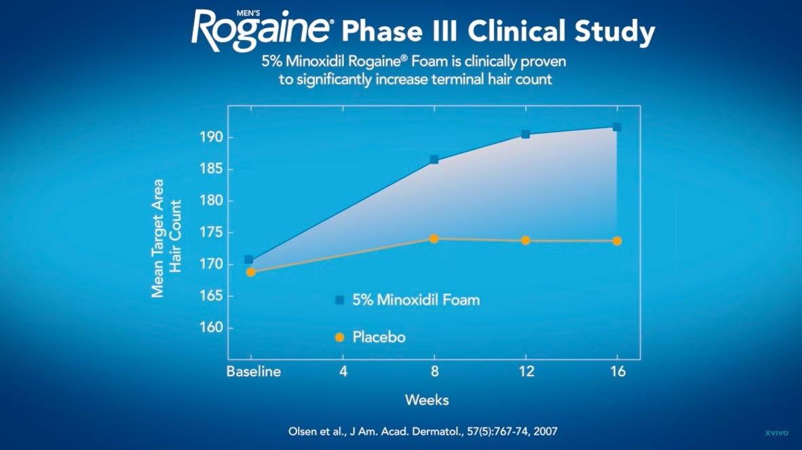

Stymulacja wzrostu włosów - Minoxidil
Minoxidil był oryginalnie lekiem na nadciśnienie przyjmowanym doustnie.
Stosowany we wcierce, około 2% minoxidilu przenika do organizmu i u wrażliwych osób może powodować uczucie
słabości, tachykardię i kłucie w sercu.
wcierka Alopexy (Minoxidil 5%)
- w aptece bez recepty
- 1 butelka 60 ml zawiera płaską strzykawkę - aplikator (nie trzeba kupować trójpaka 3x60ml)
- od 1ml do 2ml 1x dziennie (pokryć pożądany obszar skóry głowy)
- głowę można umyć po 1.5h od wcierki
- może wystąpić przejściowe wypadanie włosów (shedding) między 2-8 tygodniem od rozpoczęcia
stosowania minoxidilu - kontynuować leczenie, oznacza to że minoxidil działa (efekty można
ocenić po 2-3 miesiącach)
- po odstawieniu minoxidilu, po miesiącu może rozpocząć się wypadanie włosów i wszystkie
korzystne efekty znikną po 3 miesiącach
- uwaga: minoxidil jest toksyczny dla kotów i psów (umyć dokładnie ręce po wcieraniu i przez
minimum godzinę nie mieć kontaktu z karmą dla zwierząt, zalecam wcierać lewą ręką jeśli jesteśmy
praworęczni), w przypadku zatrucia zwierzę będzie wymiotować i należy udać się niezwłocznie do
weterynarza
Alopexy ma najlepszy skład z dostępnych minoxidilów w aptece (zawiera najmniej glikolu propylenowego
oraz etanolu - alkoholu).
Mimo wszystko, glikol można pozostawiać efekt tłustych włosów a alkohol może przesuszać skórę.
Alternatywnie do płynu, można stosować minoxidil w piance (nie ma glikolu ani etanolu), jest nieco droższa
- ale szybciej się wchłania (po 15 minutach zamiast 1.5h) i nie powoduje efektu tłustych włosów.
Pianka Doppelhertz Minoxidil 5%
https://www.ceneo.pl/174130671

Minoxidil jest również dostępny jako tabletki na receptę (w Centrum Rakowska), natomiast
trzeba być ostrożnym.
Oryginalnie minoxidil w formie doustnej był stosowany jako lek na
nadciśnienie w dawce 50mg dziennie.
Uznaje się, że 1mg do 5mg dziennie jest bezpieczne, ale u niektórych osób może powodować tachykardię,
zawroty głowy, hipertrychozę (owłosienie na całym ciele).